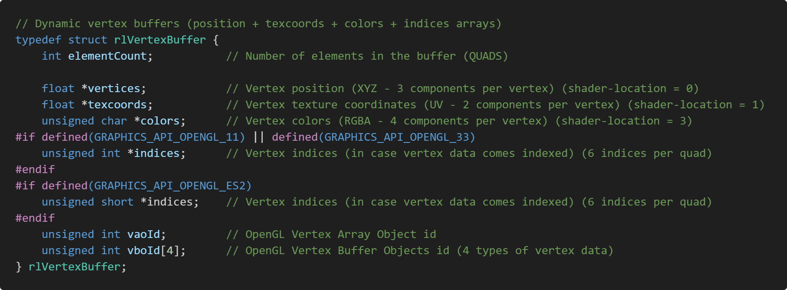
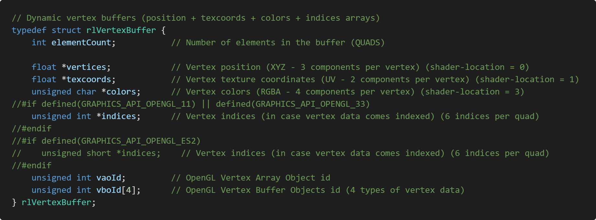

2.注意事項
この説明書では、
raylibの関数等の使い方の説明はしません
。raylibhspの使い方を主に説明します。
現在のraylibhspは、
HSP3.7 beta6、raylibのバージョン4.5を基に設計されております
。今後、
raylibがバージョンアップした際等
には
同梱されている「raylib.hsp」ファイルは使用できなくなる
と思われます。
その際
は
「9.「raylib_parser.exe」を使って「*_api.json」ファイルを生成する方法」
を参考にして、
「raylib.hsp」を自分で生成させてください
。
現在のraylibhspは、
コールバック関数等が使用できません
。また、
raylibの機能を完全にはサポートしていない
ことにご注意ください。
raylibのバージョン4.5で「raylib_parser.exe」を用いて「rlgl.h」から「rlgl_api.json」を生成する際、raylibhspの作者によって以下の画像のように「rlgl.h」の内容を書き換えたうえで「rlgl_api.json」を生成しました。
修正前

修正後

「raylibhsp」は64ビット版のHSP3上で使用することをおすすめします
。その際は、「raylib.dll」と「raylib.hsp」に加え、inoviaさんが作成した
「HSPInt64」をダウンロード
し、
「hspint64.dll」ファイルと「hspint64.as」ファイル
を、あなたが
raylibhspを用いて制作するゲームのフォルダにコピー
してください。
「HSPInt64」がダウンロードできるinoviaさんのページ
https://hsp.moe/
32bit版HSP3では、一部の関数の実行後の返り値が正常に返ってきません
。64bit版HSP3で「raylibhsp」を使用することをおすすめします。